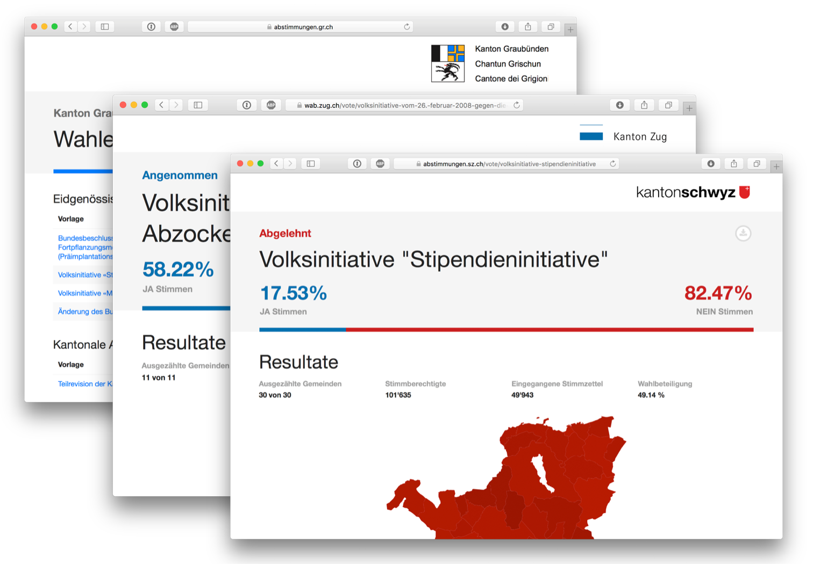

Online Portal für Wahl- und Abstimmungsresultate
Wahlen und Abstimmungen sind die Ecksteine demokratischer Systeme. Die Transparenz und Nachvollziehbarkeit von Resultaten politischer Willensäusserungen ist für die Legitimität politischer Entscheidungen vital. Aus diesem Grund müssen Wahl- und Abstimmungsergebnisse einfach öffentlich zugänglich sein.

Eine Lösung für drei Kantone
Zusammen mit den Kantonen Graubünden, Schwyz und Zug hat seantis ein Online- Portal zu Publikation von Wahl- und Abstimmungsergebnissen entwickelt. Die Applikation ist Open Source verfügbar und basiert auf der Lösung «OneGov Cloud». Somit seht die Lösung ohne Zusatzaufwand für weitere Kantone zur Verfügung.
Open Data
Die Zugänglichkeit der Daten ist oberstes Gebot. Daten werden grundsätzlich in Tabellen publiziert. Wo sinnvoll werden die Resultate auf einer interaktiven Karte dargestellt. Bei aller Attraktivität grafischer Darstellung wird nicht vergessen, dass alle Daten immer im Rohformat exportierbar sein müssen. Als Exportformate stehen JSON, CSV sowie Excel zur Verfügung. Zum Datensatz gehört eine Formatbeschreibung.
Besucherspitzen am Wahltag
Da die Abstimmungsresultate besonders am Abstimmungssonntag auf grosses Interesse stossen, muss die Applikation mit Lastspitzen umgehen können. Dies ist im Rahmen der Entwicklung explizit beachtet und getestet worden. Mittels Load Testing wurden zu erwartende Lasten im effektiven Deployment simuliert.
Kanton Graubünden: https://abstimmungen.gr.ch
Kanton Schwyz: https://abstimmungen.sz.ch
Kanton Zug: https://wab.zug.ch
Source Code OneGov Election Day: https://github.com/OneGov/onegov.election_day
OneGov Cloud: https://onegovcloud.ch